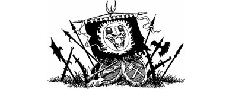

350
At the very moment of his death, the shimmering web of energy that encases the Zakhan’s body flares with a scarlet brilliance so intense that you are forced to avert your eyes for fear of it blinding you. The light surges and fades, leaving behind a mound of glowing fragments that crumble and dissolve noisily until all that remains of the Zakhan and the Orb of Death is a dark stain on the earth where they fell.
{kind=link}

Spurred on by your triumph, the Anarian defenders rally themselves and counterattack to secure the West Gate. The Vassagonians who gained entry are either killed or forced back into the moat as the gate is quickly retaken. A cheer resounds from the city wall, a cheer that becomes a chant carrying word of Kimah’s demise to the enemy beyond the moat, and gradually the advancing legions slow to a halt as their hope of an easy victory dies. Officers ride to and fro, cursing and threatening their men with all manner of punishment, but their morale is severely shaken; the ranks of armoured warriors merely stand in shocked silence and refuse to advance. The sound of distant trumpets is heard and all eyes turn to the south to see wave upon wave of mounted warriors emerging from the hills around Varta. They pour from every valley and pass to fill the southern flats with regiments of horsemen resplendent in uniforms of blue, white, and grey.
‘Our prayers have been answered,’ says Chiban, as he and Banedon rejoin you at the city wall. ‘Behold, the allies of Anari have come to aid us in our darkest hour.’ He points to the advancing cavalry and you recognize, fluttering from their lances, the battle standards of three countries: Firalond, Lourden, and Kakush. Then the thunder of their horses’ hooves fills the air and a wave of joy surges through you as you witness their first charge devastate the enemy’s ranks, throwing them into chaos and confusion. A great battle ensues as the enemy slowly gather themselves to resist this unexpected assault. By noon two of their armies have been smashed and routed, and the third fights a desperate rearguard action as it covers the chaotic retreat westwards.
At last the fighting around the city comes to an end, and the defenders give voice to their elation that their home has been saved from the hordes of Darklord Gnaag. Senator Zilaris proclaims you ‘the saviour of Tahou’, and the victorious cheers of the citizens echo through the burning streets and across the flats that lie strewn with enemy dead. (If any of your Weapons or weapon-like Special Items were confiscated by the South Gate Guard, they are now gratefully returned to you.) You gaze at this grim panorama and your blood runs cold. But it is not the sight of the carnage that grips you with fear, it is your growing awareness of a powerful evil that is taking shape above the West Gate. A billowing black cloud forms in the sky, and from out of this cloud there comes a harsh and terrible voice.
‘I will be avenged,’ it booms, its resonance shaking the battlements on which you stand. You steel yourself, half expecting a bolt of lightning to leap from the cloud and hurtle towards you, but no such attack materializes. Instead, the chilling voice continues in a mocking tone. ‘Know this: you will pay for your defiance with your life. I, Gnaag of Mozgôar, have the three remaining Lorestones that you seek, and I shall destroy them when I destroy you, Kai Lord.’
A gust of wind catches the cloud and it clears swiftly, but it leaves behind a numbing dread that fills your heart, for you sense that the words were no idle threat—the terrible voice of Darklord Gnaag spoke the truth.
Your quest has succeeded, for the wisdom and strength of the Lorestone of Tahou is now a part of your body and spirit, and your defeat of Zakhan Kimah has turned the tide of war decisively against the Darkland armies. But the shocking news that the Darklords now possess the remaining Lorestones of Nyxator heralds the start of a new and deadly perilous episode of the Magnakai quest.
If you have the courage of a true Kai Master, the challenge of recovering the last Lorestones from the clutches of your mortal enemies awaits you, beginning in Book 10 of the Lone Wolf series, entitled: